lab 테마 실습
코딩 실습(LAB) 시간용 테마. 처음 열면 어두운 바탕이고 d 키로 밝게 바꾼다. 상자는 모두 직각이고 가는 선과 옅은 색 면으로 구분한다. 코딩 테스트 문제를 구분(맛보기·필수·도전) · 난이도 · 프로그래머스 번호 · 예상 소요시간과 함께 보여 주는 문제 상자(Problem)가 있고, AI에게 보낼 프롬프트 상자는 섹션 이름 줄과 터미널 표를 알아서 구분해 그린다. 기본 색은 파랑 · 보라이고, 덱 헤더에 palette: teal을 적으면 청록 · 남색으로 바뀐다.

미리보기
예제 덱(lab-example.md · lab-teal-example.md)에서 찍은 화면이다. 그림을 누르면 크게 본다.


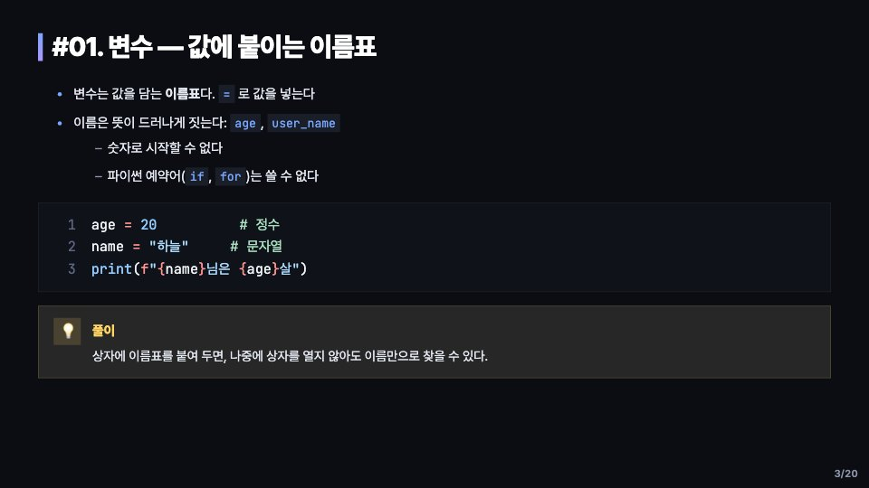

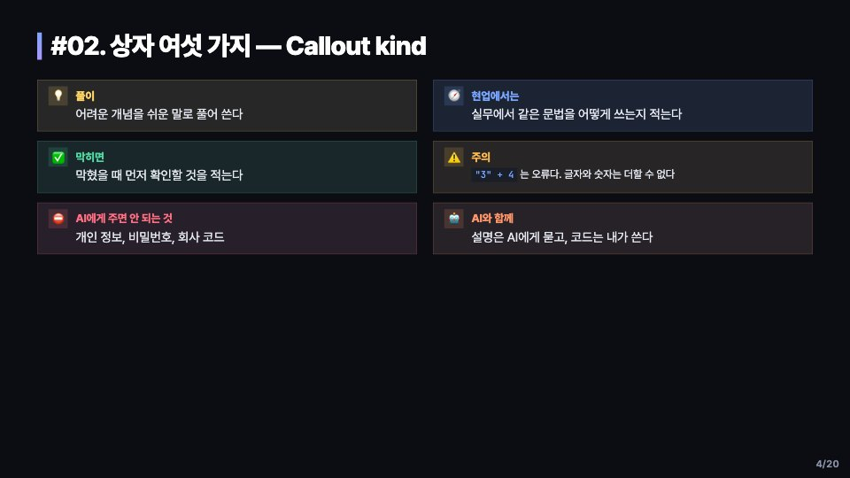

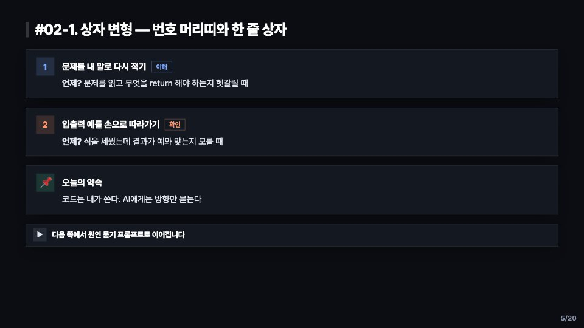


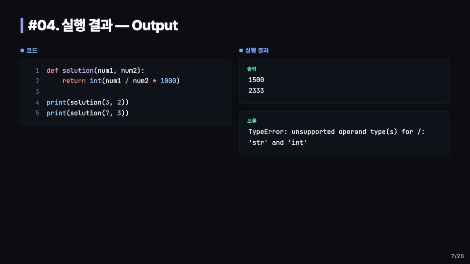


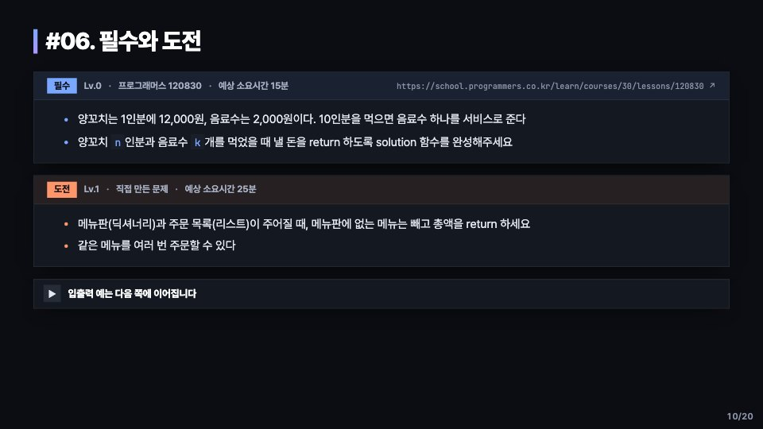

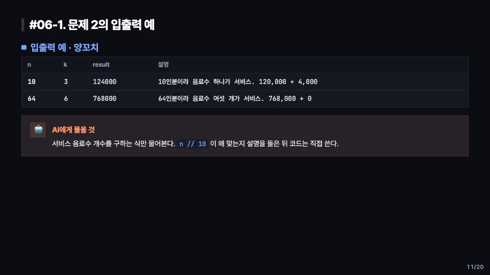

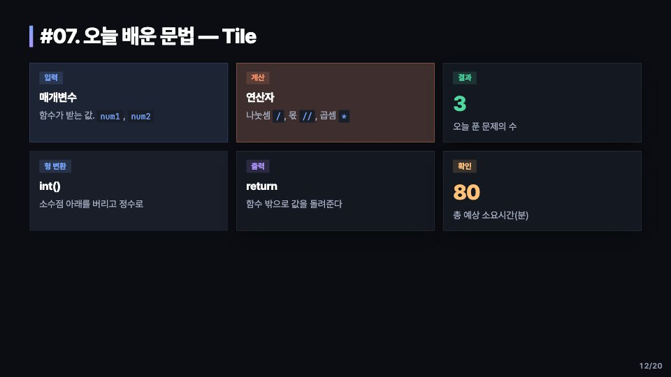

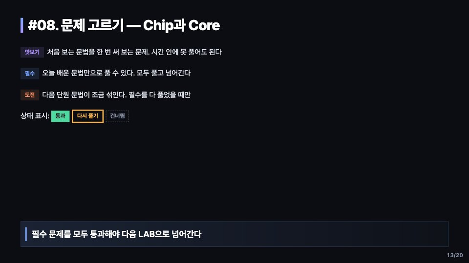

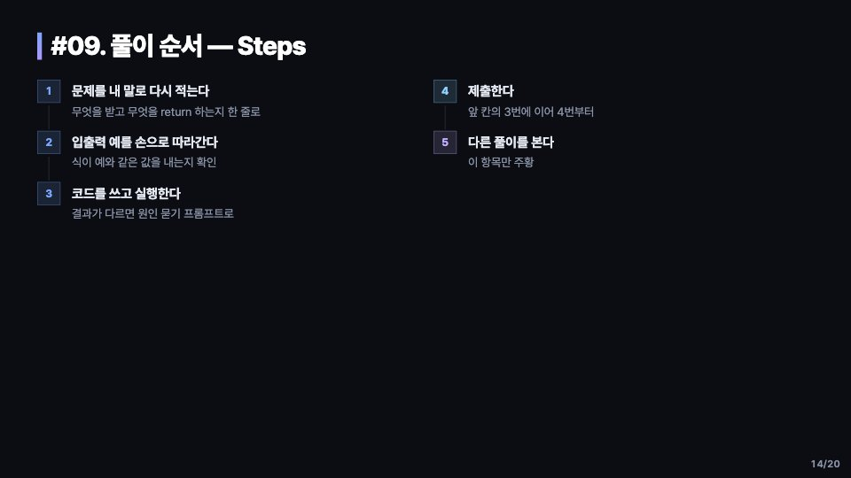

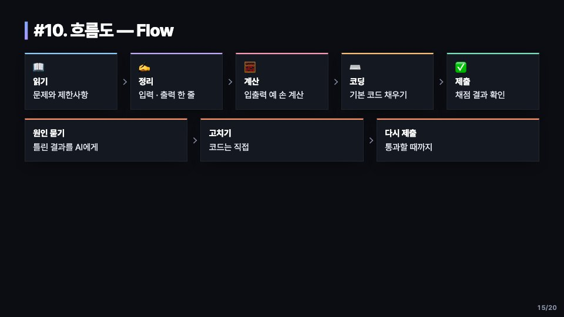

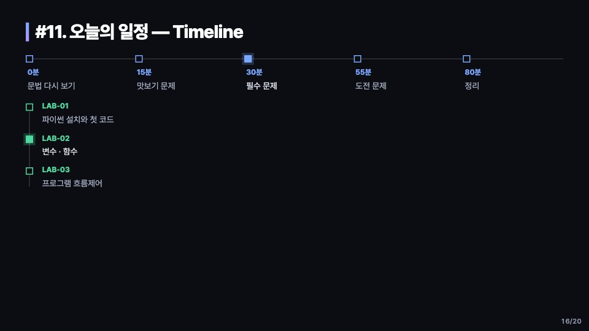

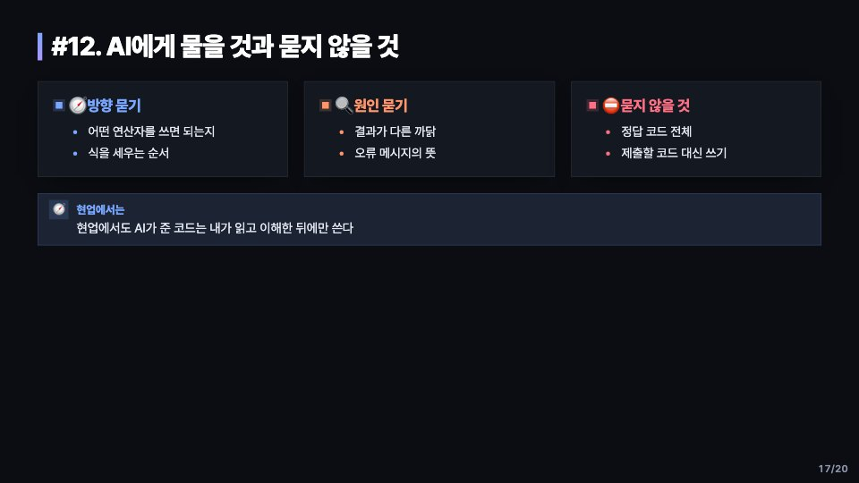

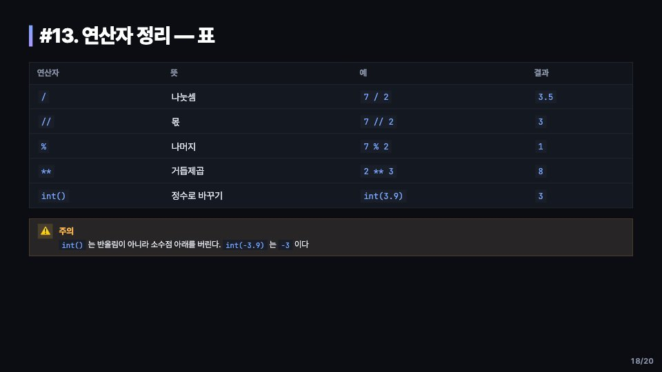

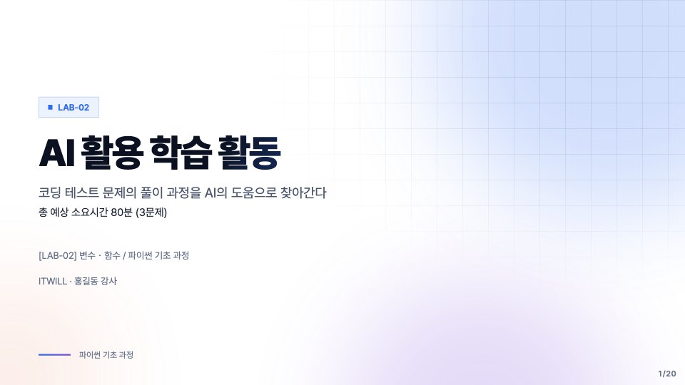

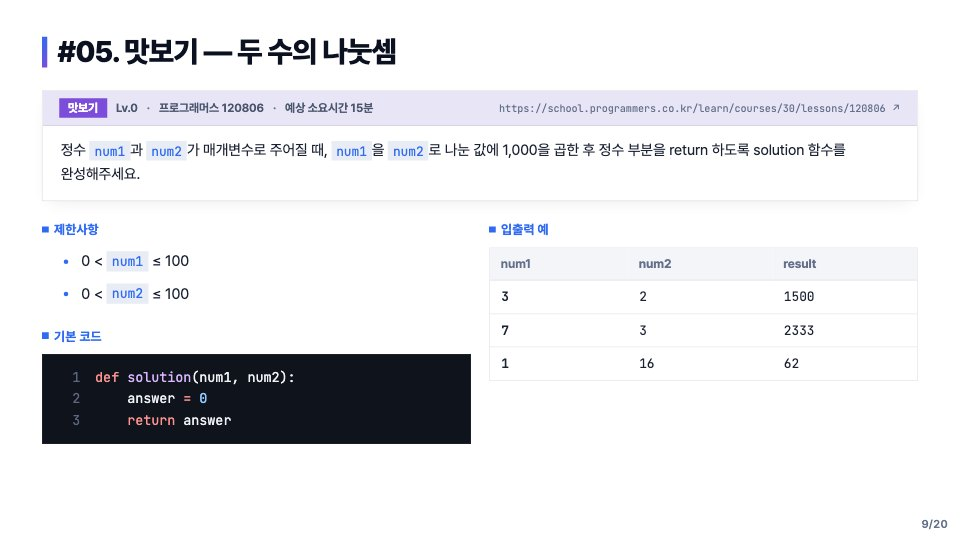


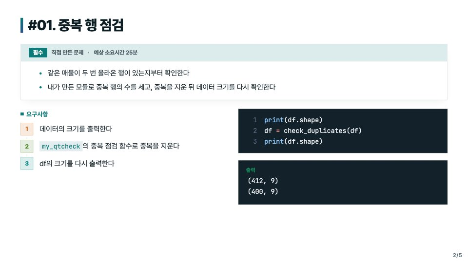

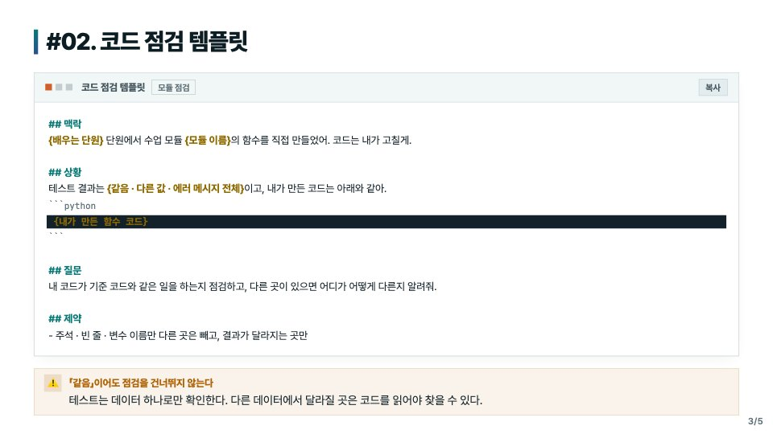

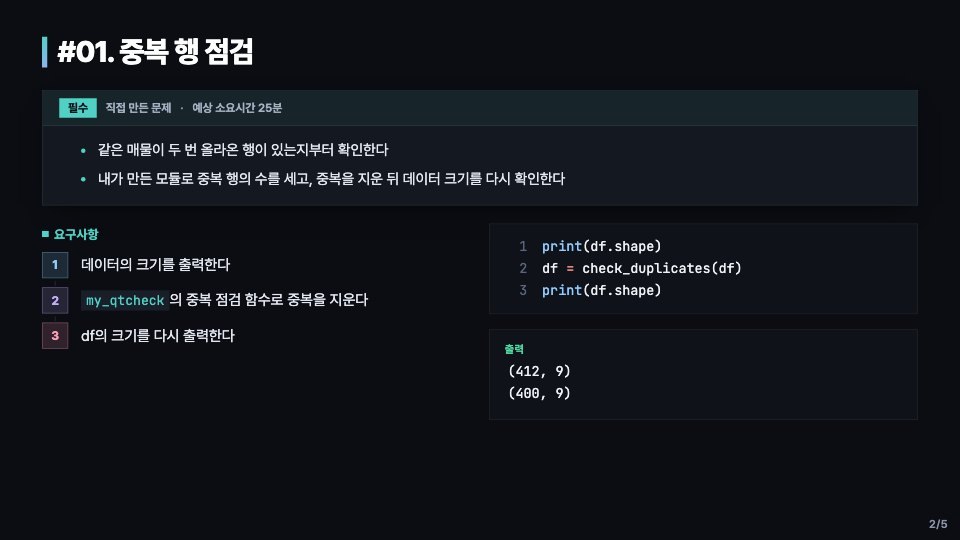
시작하기
저장소를 받은 뒤(git clone https://github.com/leekh4232/slidev-themes.git) 프런트매터에 테마 폴더 경로(theme: ./slidev-themes/lab처럼 md 파일 기준)를 적는다. 첫 슬라이드의 프런트매터(헤드매터)에서 아래 옵션으로 덱 전체 모양을 정한다.
| 옵션 | 값 | 기본 |
|---|---|---|
colorMode | light면 밝은 테마, dark면 어두운 테마로 덱을 연다. 발표 중에는 d 키로 바꿀 수 있다 | 처음 한 번 어둡게, 그 뒤엔 마지막에 고른 테마 |
exportDark | true면 PDF·PNG 내보내기를 어두운 테마로, false면 밝은 테마로 | true (colorMode를 적었으면 그 테마) |
fontScale | 본문 배율(0.6~2). 덱을 이 배율로 열고, 0 키·배율 버튼을 누르면 이 값으로 돌아간다. 내보내기에도 적용된다 | 마지막에 고른 배율 |
manuscript | true면 사이드바에 📄 원고 버튼을 둔다. false면 버튼을 뺀다 | true |
sidebar | true면 발표 화면 왼쪽에 목차 사이드바, false면 슬라이드만 | true |
palette | teal이면 청록 · 남색 색 묶음. 밝은 테마에서는 바탕 · 글 · 강조색이 모두 바뀌고, 어두운 테마에서는 강조색(파랑 → 청록)만 바뀐다 | 생략하면 파랑 · 보라 |
title은 · (가운뎃점 양옆 공백)를 기준으로 앞은 과정 이름, 뒤는 단원 이름으로 사이드바에 올라간다. 첫 슬라이드는 layout: cover로 쓴다. 표지는 왼쪽 정렬이고, 오른쪽 위로 모눈 무늬와 빛 번짐이 깔린다. title의 · 앞부분이 제목 위 머리말 알약으로 자동으로 올라가고(eyebrow로 바꿀 수 있다), 제목 다음 문단은 회색 부제, <p class="sub">는 그 아래 작은 회색 줄이 된다. 프런트매터 author는 작성자 줄, footer는 맨 아래 막대 옆 작은 글이다.
---
theme: ./slidev-themes/lab
sidebar: true # 생략 가능 (기본값)
colorMode: dark # 생략 가능. light | dark
palette: teal # 생략하면 파랑 · 보라
fontScale: 1 # 생략 가능. 본문 배율 0.6~2
title: LAB-02 · AI 활용 학습 활동
author: ITWILL · 홍길동 강사
footer: 파이썬 기초 과정
layout: cover
---
# AI 활용 학습 활동
코딩 테스트 문제의 풀이 과정을 AI의 도움으로 찾아간다
총 예상 소요시간 80분 (3문제)
<p class="sub">[LAB-02] 변수・함수 / 파이썬 기초 과정</p>palette: teal · colorMode: lightpalette: teal의 어두운 테마. 강조색만 청록사이드바와 조작
사이드바 · 단축키 · 원고 보기 · 넘침 표시는 hossam 테마와 같다. 목차는 슬라이드마다 첫 제목을 모아 만들고, 표지와 hideInToc: true를 적은 슬라이드는 넣지 않는다. 제목의 — 뒤 부제와 맨 앞 이모지는 목차에서 뗀다. ### 제목 슬라이드는 바로 위 ## 항목 아래로 한 단계 들여 묶이고, # 제목 슬라이드(간지)가 나온 뒤의 항목은 간지보다 한 단계 들여 쓴다(간지 아래의 ###는 두 단계).
| 키 | 동작 |
|---|---|
| → ← Space | 다음·이전 |
| s | 사이드바 접기·펼치기. 처음에는 접힌 채 열리고, 펼친 상태는 브라우저에 기억된다 |
| a | 애니메이션 켬·끔. 끄면 클릭 단계(v-click)가 전부 보인다 |
| d | 밝은·어두운 테마 전환 |
| + - 0 | 본문 확대·축소·기본 크기(60~200%). 캔버스는 그대로고 글자·여백만 바뀐다 |
슬라이드는 항상 16:9(1280×720)이다. 내용이 캔버스를 넘치면 잘리고, 슬라이드 안쪽에 빨간 테두리와 넘친 길이(예: 내용 넘침 ↓120px)가 뜬다(발표 화면에서만). 모든 슬라이드 오른쪽 아래에 현재/전체 쪽 번호가 붙는다.
글쓰기
##슬라이드 제목은 왼쪽에 그라디언트 세로 막대가 붙고 밑줄은 없다. 슬라이드를###제목으로 시작하면 조금 작아지고 막대가 회색이 된다(목차에서 하위 항목). 제목 번호는#01.·#01-1.처럼 쓴다.- 목록 글머리는 강조색 점, 둘째 수준은 회색 –. 인라인 코드(백틱 하나)는 옅은 강조색 상자.
- 코드 블록은 밝은 테마에서도 어두운 직각 상자다. 줄 번호가 기본으로 켜져 있고 주석은 연한 초록이다. 긴 줄은 가로 스크롤 없이 줄을 바꾼다. 글꼴은 JetBrains Mono(한글은 Pretendard).
- 표는 머리글이 작은 회색 글에 연한 바탕이고, 첫 열(항목 이름)은 굵게 한 줄로 보인다. 첫 열이 표 폭의 30%를 넘을 만큼 길면 줄바꿈을 허용한다. 입출력 예 표는
<div class="io">로 감싸 값을 고정폭 글꼴로 쓴다. - 문제 하나는 문제 상자(Problem) → 제한사항 · 기본 코드 · 입출력 예를 Grid 두 칸으로 놓는 순서로 쓴다. 한 쪽에 다 들어가지 않으면 줄이지 않고 다음 쪽(
### #05-1.)으로 나누고, 끝에 이어진다는 한 줄 상자를 둔다. - 슬라이드를 열면 제목을 뺀 본문 요소가 차례로 아래에서 떠오른다. a로 끈다.
## #01. 변수 — 값에 붙이는 이름표
- 변수는 값을 담는 **이름표**다. `=` 로 값을 넣는다
- 이름은 뜻이 드러나게 짓는다: `age`, `user_name`
- 숫자로 시작할 수 없다
```python
age = 20 # 정수
name = "하늘" # 문자열
print(f"{name}님은 {age}살")
```
<Callout kind="eli5">
상자에 이름표를 붙여 두면, 나중에 상자를 열지 않아도 이름만으로 찾을 수 있다.
</Callout>레이아웃
슬라이드 프런트매터의 layout으로 고른다. 적지 않으면 default. Slidev 기본 레이아웃(center, two-cols …)도 그대로 쓸 수 있다.
| layout | 모양 | 프런트매터 |
|---|---|---|
default | 본문. 제목 아래에 목록 · 코드 · 표 · 상자가 위에서부터 흐른다. 마지막 블록이 Core면 맨 아래에 붙는다 | - |
cover | 표지. 왼쪽 정렬 큰 제목, 과정 이름 알약, 부제, 작성자, 모눈 무늬와 빛 번짐. 종료 쪽에도 쓴다(hideInToc: true) | author(덱 헤더) eyebrow footer |
section | 간지. 위에 덱 제목 머리말, 제목 왼쪽에 그라디언트 세로 막대. 제목 뒤 문단은 부제 | - |
cards | 카드형. 제목 아래의 <div> 칸(또는 Tile)이 직각 카드 격자가 된다. 그 밖의 요소(목록 · Callout · Problem · Grid · .kicker)는 전체 폭 한 줄 | cols(기본 3) |
section — 간지
LAB 안의 파트(문법 다시 보기 · 문제 풀기)를 나눈다. # 제목 하나를 쓰고 그 아래 문단은 부제가 된다. 간지 뒤의 슬라이드는 목차에서 한 단계 들여 쓴다.
---
layout: section
---
# 코딩 테스트 문제 풀기
프로그래머스 문제를 AI와 함께 푼다cards — 카드형
<div>로 감싼 칸이 카드가 된다. 안의 마크다운(#### 제목, 목록)은 여는 태그와 닫는 태그를 빈 줄로 띄운다. 카드 제목 색은 기본 강조색이고, 칸에 ai · ok · danger 클래스를 주면 그 색이 된다. 칸만 있으면 카드가 남은 높이를 나눠 채우고, 카드가 아닌 요소가 있으면 내용 높이대로 쌓인다. 프런트매터에 class: compact를 적으면 카드 안쪽 여백이 줄어든다.
---
layout: cards
cols: 3
---
## #12. AI에게 물을 것과 묻지 않을 것
<div>
#### 🧭 방향 묻기
- 어떤 연산자를 쓰면 되는지
</div>
<div class="ai">
#### 🔍 원인 묻기
- 결과가 다른 까닭
</div>
<div class="danger">
#### ⛔ 묻지 않을 것
- 정답 코드 전체
</div>
<Callout kind="real" class="small">AI가 준 코드는 읽고 이해한 뒤에만 쓴다</Callout>컴포넌트
Problem — 문제 상자
코딩 테스트 문제 하나를 담는다. 머리띠에 구분(색 띠) · 난이도 · 출처 · 예상 소요시간을 적고, 본문(슬롯)에 문제 설명을 둔다. id를 주면 머리띠 오른쪽에 프로그래머스 문제 주소가 붙고, 누르면 새 창에서 문제가 열린다. 본문에 마크다운을 쓰려면 여는 태그와 닫는 태그를 빈 줄로 띄운다.
| 프롭 | 뜻 | 기본 |
|---|---|---|
tier | 구분. 맛보기(보라) · 필수(강조색) · 도전(주황). 그 밖의 글은 강조색으로 그대로 적는다 | 필수 |
level | 난이도. 숫자면 Lv.0처럼, 글이면 그대로 적는다 | - |
id | 프로그래머스 문제 번호. "프로그래머스 120806"과 문제 주소를 함께 적는다 | - |
source | 출처 글(id가 없을 때). 예: 직접 만든 문제 | - |
time | 예상 소요시간(분). "예상 소요시간 15분"으로 적는다 | - |
<Problem tier="맛보기" level="0" id="120806" time="15">
정수 `num1`과 `num2`가 매개변수로 주어질 때, `num1`을 `num2`로 나눈 값에 1,000을 곱한 후 정수 부분을 return 하도록 solution 함수를 완성해주세요.
</Problem>
<Grid cols="2" align="start">
<div>
<span class="kicker">제한사항</span>
- 0 < `num1` ≤ 100
<span class="kicker">기본 코드</span>
```python
def solution(num1, num2):
answer = 0
return answer
```
</div>
<div>
<span class="kicker">입출력 예</span>
<div class="io">
| num1 | num2 | result |
|:--|:--|:--|
| 3 | 2 | 1500 |
</div>
</div>
</Grid>
<Problem tier="도전" level="1" source="직접 만든 문제" time="25">
- 메뉴판에 없는 메뉴는 빼고 총액을 return 하세요
</Problem>Grid — 격자 배치
슬라이드 안의 원하는 곳을 여러 단으로 나눈다. 칸 안에 마크다운(코드 블록 · 목록)을 쓰려면 칸마다 <div>로 감싸고, 여는 태그와 닫는 태그를 빈 줄로 띄운다.
| 프롭 | 뜻 | 기본 |
|---|---|---|
cols | 열 수(2, 3) 또는 grid-template-columns 값("1fr 400px") | 2 |
gap | 칸 사이 간격. 숫자 하나면 가로·세로 모두(px), 두 개면 "세로 가로". 단위를 붙이면 그대로 | 24 |
align | align-items 값. 칸 높이가 다를 때 start로 위를 맞춘다 | - |
title | 격자 위에 붙는 작은 제목 | - |
<Grid cols="2" gap="14 24">
<Callout kind="eli5" class="small">어려운 개념을 쉬운 말로 풀어 쓴다</Callout>
<Callout kind="real" class="small">실무에서 같은 문법을 어떻게 쓰는지 적는다</Callout>
</Grid>Callout — 상자
머리말이 있는 상자 하나로 콜아웃 · 프롬프트 · 출력 · 번호 머리띠를 그린다. kind로 묶음(아이콘 · 머리말 · 색)을 고르고, 나머지 프롭으로 세부를 바꾼다. 안에 마크다운을 쓰려면 여는 태그와 닫는 태그를 빈 줄로 띄운다. 본문 없이 title만 주면(<Callout … />) 머리말 한 줄짜리 상자가 된다. 다음 쪽으로 이어진다는 안내에 쓴다.
| kind | 머리말 | 색 |
|---|---|---|
eli5(기본) | 💡 풀이 | 노랑 |
real | 🧭 현업에서는 | 강조색 |
tip | ✅ 막히면 | 초록 |
warn | ⚠️ 주의 | 주황 |
danger | ⛔ AI에게 주면 안 되는 것 | 빨강 |
ai | 🤖 AI와 함께 | 주황 |
prompt | 프롬프트 | 주황. 복사 버튼이 붙는다(Prompt) |
output | 출력 | 초록 라벨, 어두운 터미널 상자(Output) |
plain | 없음 | 강조색. n이나 color만 주면 이것이 기본 |
| 프롭 | 뜻 | 기본 |
|---|---|---|
title | 머리말 글 | 묶음의 머리말 |
icon | 머리말 앞 아이콘(이모지 · 글자). ""를 주면 뺀다 | 묶음의 아이콘 |
color | 머리말 색. py vi ai ok yellow warn danger muted pastel-1~6 또는 CSS 색. 바탕은 그 색을 옅게 깐다 | 묶음의 색 |
n | 왼쪽 번호 상자. 단계 번호처럼 상자를 머리띠로 쓸 때 | - |
tag | 머리말 오른쪽 작은 테두리 글 | - |
copy | 오른쪽 위 복사 버튼 | prompt만 켬 |
class="small" | 본문 글자를 작게. Grid 칸처럼 좁은 자리에 넣을 때 | - |
<Callout kind="warn" class="small">
`"3" + 4` 는 오류다. 글자와 숫자는 더할 수 없다
</Callout>
<Callout n="1" title="문제를 내 말로 다시 적기" tag="이해">
<b>언제?</b> 문제를 읽고 무엇을 return 해야 하는지 헷갈릴 때
</Callout>
<Callout icon="📌" title="오늘의 약속" color="ok">코드는 내가 쓴다</Callout>
<Callout kind="plain" color="muted" icon="▶" title="입출력 예는 다음 쪽에 이어집니다" class="small" />Prompt · Output — 프롬프트와 출력
Prompt는 <Callout kind="prompt">의 짧은 이름이다. 안에 백틱 네 개의 md 코드 펜스로 프롬프트를 넣으면 줄바꿈이 그대로 남고, 오른쪽 위 복사 버튼이 그 글을 클립보드에 넣는다. 프롬프트는 본문 글꼴로 그리되 세 가지 줄을 알아서 구분한다.
## 맥락·## 상황처럼#으로 시작하는 섹션 이름 줄은 강조색 굵은 글{내 코드}처럼 중괄호로 감싼 치환 자리는 노랑 굵은 글- 안에 넣은
```python코드 펜스 안쪽 줄은 어두운 띠 위의 고정폭 글꼴 +---+·| a | b |처럼+나|로 시작하고 끝나는 줄(터미널 표)은 작은 고정폭 글꼴로 칸을 맞춘다.| 순서 | 표로처럼|로 끝나지 않는 줄은 대상이 아니다
title로 머리말(기본 "프롬프트"), tag로 옆의 작은 글을 바꾸고 copy="false"면 복사 버튼을 뺀다. 프롬프트가 길면 슬라이드 프런트매터에 class: dense를 적어 줄 간격을 줄인다.
Output은 <Callout kind="output">의 짧은 이름으로, 어두운 터미널 상자에 프로그램 출력을 담는다. label(또는 title)로 왼쪽 위 라벨(기본 "출력")을 바꾼다. 여러 줄 출력은 안에 text 코드 펜스로 넣는다. 펜스의 배경 · 테두리 · 줄 번호가 빠져 상자와 한 몸으로 보인다.
---
class: dense
---
## #03. 원인 묻기 — Prompt
<Prompt title="원인 묻기 템플릿" tag="틀린 결과">
````md
## 상황
solution 함수를 실행했더니 입출력 예와 결과가 달라.
| num1 | num2 | 기대한 결과 | 내 결과 |
+------+------+-------------+---------+
| 3 | 2 | 1500 | 1500.0 |
+------+------+-------------+---------+
## 질문
내 코드의 어느 줄 때문에 결과가 다른지 이유만 알려 줘.
````
</Prompt>
<Output>
```text
1500
2333
```
</Output>
<Output label="오류">
```text
TypeError: unsupported operand type(s) for /: 'str' and 'int'
```
</Output>Steps — 번호 목록
<li>를 나열하면 번호 상자와 그 사이를 잇는 가는 선이 붙는다. type으로 모양을 고른다: list(기본) 세로 번호 목록, flow 가로 흐름도, timeline 선 위의 점. Flow · Timeline은 각각의 짧은 이름이다.
| 프롭 | 뜻 | 기본 |
|---|---|---|
type | list · flow · timeline | list |
color | py · vi · ai · ok · pastel(항목마다 여섯 색을 돌아가며). 항목 하나만 바꾸려면 <li class="ai">처럼 py ai ok danger를 준다 | py |
start | 첫 번호(list). 앞에서 이어 번호를 붙일 때 | 1 |
vertical | timeline을 세로로 | - |
center | timeline의 점과 글을 칸 가운데에 | - |
<Steps>
<li><b>문제를 내 말로 다시 적는다</b><br/><span class="muted small">무엇을 받고 무엇을 return 하는지 한 줄로</span></li>
<li><b>입출력 예를 손으로 따라간다</b></li>
</Steps>
<Steps color="pastel" start="4">
<li><b>제출한다</b></li>
<li class="ai"><b>다른 풀이를 본다</b></li>
</Steps>start="4", 다섯째 항목만 주황Flow — 가로 흐름도
<Steps type="flow">의 짧은 이름. <li>마다 윗선에 색이 있는 직각 상자가 한 줄로 놓이고 사이에 꺾쇠가 붙는다. <li> 안의 첫 <b>가 상자 제목이고, 그 앞에 이모지나 Iconify 아이콘을 둘 수 있다. color는 Steps와 같다.
<Flow color="pastel">
<li>📖<b>읽기</b>문제와 제한사항</li>
<li>✍️<b>정리</b>입력 · 출력 한 줄</li>
<li>✅<b>제출</b>채점 결과 확인</li>
</Flow>color="pastel"과 color="ai"Timeline — 타임라인
<Steps type="timeline">의 짧은 이름. 선 위에 네모 점이 찍히고 그 아래에 내용이 놓인다. 첫 <b>는 시점(색 글씨), <li class="now">는 점을 채워 "지금 여기"로 강조한다. vertical은 세로, center는 가운데 정렬.
<Timeline>
<li><b>0분</b>문법 다시 보기</li>
<li class="now"><b>30분</b>필수 문제</li>
<li><b>80분</b>정리</li>
</Timeline>
<Timeline color="ok" vertical> … </Timeline>vertical)Tile — 타일
직각 상자에 tag(작은 라벨) → title(굵은 제목) → value(큰 숫자) → 본문(슬롯) 순서로 쌓는다. 모두 생략할 수 있다. 여러 개는 Grid로 나란히 두고, 카드형 레이아웃에서는 타일이 그대로 칸이 된다.
| 프롭 | 뜻 | 기본 |
|---|---|---|
kind | plain 카드 바탕 · surface 연한 회색 바탕(선 없음) · soft color를 옅게 깐 바탕 · fill color를 진하게 깐 바탕 | plain |
color | 라벨 · 숫자 색. py vi ai ok yellow warn danger muted pastel-1~6 또는 CSS 색 | py |
tag · title · value | 라벨 · 제목 · 큰 숫자 | - |
<Grid cols="3" gap="16">
<Tile tag="입력" title="매개변수" kind="soft">함수가 받는 값</Tile>
<Tile tag="계산" title="연산자" kind="fill" color="ai">나눗셈 <code>/</code>, 몫 <code>//</code></Tile>
<Tile tag="결과" value="3" color="ok">오늘 푼 문제의 수</Tile>
</Grid>Core — 핵심 한 줄
슬라이드의 결론을 왼쪽 세로 막대와 함께 굵고 크게 적는다. 슬라이드의 마지막 블록으로 두면 캔버스 맨 아래에 붙는다. color는 막대와 바탕 색(py 기본 · vi · ai · ok · yellow · warn · danger · muted 또는 CSS 색).
<Core>필수 문제를 모두 통과해야 다음 LAB으로 넘어간다</Core>Chip — 칩
글 사이에 끼우는 작은 직각 라벨(구분 · 상태). 줄 맨 앞에 Chip이 오면 그 줄이 문단으로 묶이지 않으므로 줄 전체를 <p>…</p>로 감싼다. kind는 soft(기본, 옅은 바탕) · outline(테두리만) · dashed(점선 테두리) · fill(색 바탕), color는 py(기본) vi ai ok yellow warn danger muted 또는 CSS 색.
<p><Chip color="vi">맛보기</Chip> 처음 보는 문법을 한 번 써 보는 문제</p>
상태 표시: <Chip kind="fill" color="ok">통과</Chip> <Chip kind="outline" color="warn">다시 풀기</Chip> <Chip kind="dashed" color="muted">건너뜀</Chip>클래스
| 클래스 | 뜻 |
|---|---|
.kicker | 내용 위의 작은 라벨(앞에 네모). 기본 강조색, .ai 주황 · .ok 초록 · .danger 빨강 · .muted 회색 |
.kicker.big | 쪽의 큰 머리말로 쓰는 라벨. 글자가 1.5배쯤 커진다 |
.io | 입출력 예 표. 표를 <div class="io">로 감싸면 값이 고정폭 글꼴이 된다. 열이 많으면 io small |
.card | 직각 카드. .ai .ok .danger .muted로 제목 색. 안에 <h3>와 <p> |
.muted · .small | 회색 글 · 작은 글. Steps 항목의 보충 설명에 함께 쓴다 |
.sub | 표지의 작은 회색 줄(과정 · 회차) |
.hl | 형광펜. 글자 아래쪽에 옅은 색 띠. .ai .ok .yellow .warn .danger로 색. v-click을 주면 띠가 왼쪽에서 오른쪽으로 칠해진다 |
.labels | 목록 항목 맨 앞의 굵은 글을 노랑 머리말로 칠한다. 프런트매터 class: labels 또는 감싸는 요소에 준다 |
.tight · .flush | 안쪽의 블록 간격을 촘촘하게(0.4rem) 또는 0으로 |
.fill-img | 슬라이드 맨 아래 블록으로 두면 그림을 남은 세로 공간에 비율 그대로 크게 보여 준다 |
class: dense | 슬라이드 프런트매터에 적으면 코드 · 프롬프트 상자의 줄 간격이 줄어든다(글자 크기는 그대로) |
class: compact | 카드형 슬라이드의 카드 안쪽 여백을 줄인다 |
class: tbl-wrap · tbl-nowrap | 표 첫 열을 항상 줄바꿈 · 항상 한 줄로 |
| UnoCSS 유틸리티 | mt-2 text-center 같은 Slidev 내장 클래스를 그대로 쓴다. 테마 규칙은 :where()로 감싸 우선순위를 올리지 않으므로 유틸리티가 이긴다 |
### #06-1. 문제 2의 입출력 예
<span class="kicker big">입출력 예 · 양꼬치</span>
<div class="io">
| n | k | result |
|:--|:--|:--|
| 10 | 3 | 124000 |
</div>
<span class="kicker ai">배울 문법</span>### 슬라이드 · .kicker.big · .io 표전체 예제
lab-example.md — 위 코드가 전부 들어 있는 20쪽짜리 예제 덱. lab-teal-example.md — palette: teal · colorMode: light로 쓴 짧은 덱. 저장소 안에서 우클릭 → Open with Slidev.